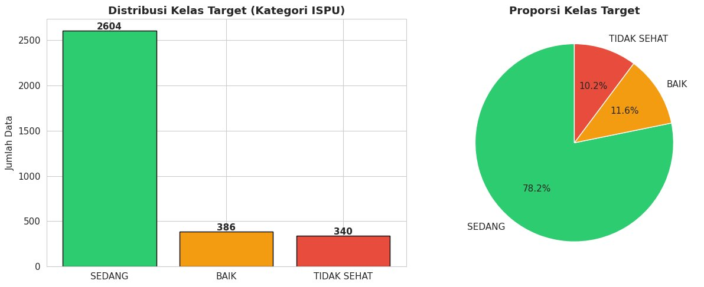
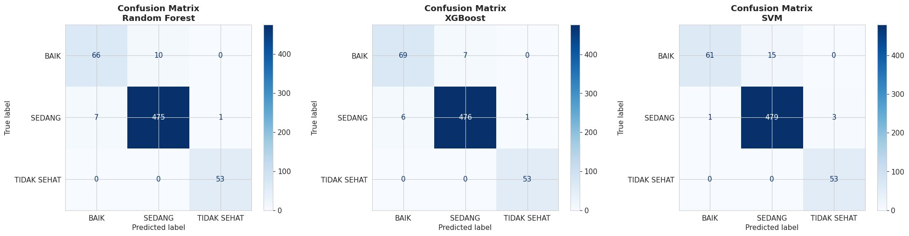
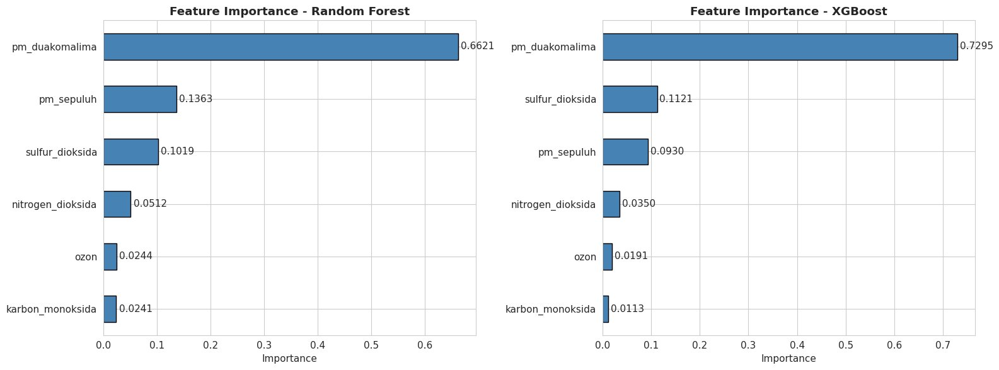

JakU: classifying Jakarta's air quality with machine learning
My undergraduate thesis. A classification model trained on official ISPU readings, wrapped in a Streamlit dashboard that people tested and rated 78.28 on the System Usability Scale.
Why this topic
Jakarta publishes a daily air quality index, ISPU, from five monitoring stations. The numbers are public, but they arrive as raw tables that most residents never read. We wanted to know whether a model could sort daily pollutant readings into the official categories reliably, and whether that result could be shown in a way ordinary users would actually use.
Can daily pollutant readings be classified into ISPU categories accurately enough to support everyday decisions, and can the result be delivered in a usable dashboard?
Data and preparation
The research dataset held 3,330 daily readings from five SPKU stations, with six pollutants (PM10, PM2.5, SO₂, CO, O₃ and NO₂) and three target classes: Good, Moderate and Unhealthy. The classes are imbalanced, with Moderate making up 78% of the data.
- Filtered invalid category rows and merged rare classes into the three-class scheme.
- Filled missing values with the median.
- Removed outliers with the IQR method, which kept 3,057 rows.
- Split the data 80/20 with stratification and scaled features for SVM only.

Modelling with CRISP-DM
I compared Random Forest, XGBoost and SVM, tuned each with GridSearchCV and five-fold stratified cross-validation, and judged them on macro F1 as well as accuracy because of the class imbalance.
| Model | Test accuracy | Macro F1 | CV mean | CV std |
|---|---|---|---|---|
| XGBoost | 97.71% | 0.9634 | 98.45% | 0.0021 |
| Random Forest | 97.06% | 0.9527 | 98.08% | 0.0054 |
| SVM | 96.90% | 0.9457 | 95.38% | 0.0044 |
XGBoost was chosen because it scored highest and had the lowest cross-validation spread, which makes it the most stable of the three.


As an additional experiment requested by my supervisor, I tested SMOTE oversampling. It lifted minority-class recall for Random Forest and XGBoost but hurt SVM, so the deployed model stays XGBoost trained on the original distribution.
Designing the dashboard
The system side followed Rapid Application Development with a User-Centered Design approach. We gathered requirements through a questionnaire, reviewed existing apps such as JAKI and the city's air quality portal, and moved from user flows to wireframes to a high-fidelity Figma prototype before building.
Usability was measured with the System Usability Scale. The dashboard scored 78.28 from 16 respondents, above the common benchmark of 68.
What the dashboard does
The app is a single Streamlit file of more than 3,000 lines, deployed on Streamlit Community Cloud and now running on the 2024 to 2025 open data release.
- Dashboard. Jakarta's current ISPU, an interactive map of the five regions and a seven-day trend with a date picker.
- Region detail. Conditions for each administrative city, from Central to East Jakarta.
- Prediction simulator. Six pollutant sliders and preset scenarios that return a category from the trained model in real time.
- Education and insight. What each category means for health, common pollution sources and practical tips.
My part and what I took away
I wrote all of the analysis code in Google Colab, built the Streamlit dashboard and wrote the thesis document, working with my teammates James Randolph and Syafiq Ammar.
The main lesson was that a high accuracy score means little on imbalanced data unless you look at the minority classes directly. The second was that the model is only half the product. The half people judge is whether they can read the answer.